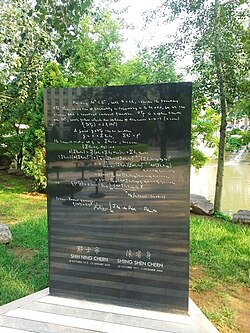
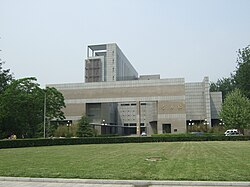

_(cropped-1).jpg){kind=link}
Shiing-Shen Chern (/tʃɜːrn/; Chinese: 陳省身; pinyin: Chén Xǐngshēn; October 26, 1911[1] – December 3, 2004) was a Chinese-born American mathematician. He made fundamental contributions to differential geometry and topology. He has been called the "father of modern differential geometry" and is widely regarded as a leader in geometry and one of the greatest mathematicians of the twentieth century, winning numerous awards and recognition including the Wolf Prize and the inaugural Shaw Prize.[1][2][3][4][5][6][7] In memory of Shiing-Shen Chern, the International Mathematical Union established the Chern Medal in 2010 to recognize "an individual whose accomplishments warrant the highest level of recognition for outstanding achievements in the field of mathematics."[8]
Chern worked at the Institute for Advanced Study (1943–45), spent about a decade at the University of Chicago (1949-1960), and then moved to University of California, Berkeley, where he cofounded the Mathematical Sciences Research Institute in 1982 and was the institute's founding director.[9][10] Renowned coauthors with Chern include Jim Simons, an American mathematician and billionaire hedge fund manager.[11] Chern's work, most notably the Chern–Gauss–Bonnet theorem, Chern–Simons theory, and Chern classes, are still highly influential in current research in mathematics, including geometry, topology, and knot theory, as well as many branches of physics, including string theory, condensed matter physics, general relativity, and quantum field theory.[12]
Name spelling
Chern's surname (traditional: 陳, simplified: 陈, pinyin: Chén) is a common Chinese surname which is now usually romanized as Chen. The unusual spelling "Chern" is from the Gwoyeu Romatzyh (GR) romanization system.[13] In English, Chern pronounced his own name with the "r" (/tʃɜːrn/).
Biography
Early years in China
Chern was born in Xiushui, Jiaxing, China in 1911. He graduated from Xiushui Middle School (秀水中學) and subsequently moved to Tianjin in 1922 to accompany his father. In 1926, after spending four years in Tianjin, Chern graduated from Fulun High School.[14]
At age 15, Chern entered the Faculty of Sciences of the Nankai University in Tianjin and was interested in physics, but not so much the laboratory, so he studied mathematics instead.[5][15] Chern graduated with a Bachelor of Science degree in 1930.[15] At Nankai, Chern's mentor was mathematician Jiang Lifu, and Chern was also heavily influenced by Chinese physicist Rao Yutai, considered to be one of the founding fathers of modern Chinese informatics.
Chern went to Beijing to work at the Tsinghua University Department of Mathematics as a teaching assistant. At the same time he also registered at Tsinghua Graduate School as a student. He studied projective differential geometry under Sun Guangyuan, a University of Chicago-trained geometer and logician who was also from Zhejiang. Sun is another mentor of Chern who is considered a founder of modern Chinese mathematics. In 1932, Chern published his first research article in the Tsinghua University Journal. In the summer of 1934, Chern graduated from Tsinghua with a master's degree, the first ever master's degree in mathematics issued in China.[14]
Yang Chen-Ning's father, Yang Ko-Chuen, another Chicago-trained professor at Tsinghua, but specializing in algebra, also taught Chern. At the same time, Chern was Chen-Ning Yang's teacher of undergraduate maths at Tsinghua. At Tsinghua, Hua Luogeng, also a mathematician, was Chern's colleague and roommate.
In 1932, Wilhelm Blaschke from the University of Hamburg visited Tsinghua and was impressed by Chern and his research.[16]
1934–1937 in Europe
In 1934, Chern received a scholarship to study in the United States at Princeton and Harvard, but at the time he wanted to study geometry and Europe was the center for the maths and sciences.[5]
He studied with the well-known Austrian geometer Wilhelm Blaschke.[15] Co-funded by Tsinghua and the Chinese Foundation of Culture and Education, Chern went to continue his study in mathematics in Germany with a scholarship.[15]
Chern studied at the University of Hamburg and worked under Blaschke's guidance first on the geometry of webs then on the Cartan-Kähler theory and invariant theory. He would often eat lunch and chat in German with fellow colleague Erich Kähler.[5]
He had a three-year scholarship but finished his degree very quickly in two years.[5] He obtained his Dr. rer.nat. (Doctor of Science, which is equivalent to PhD) degree in February, 1936.[15] He wrote his thesis in German, and it was titled Eine Invariantentheorie der Dreigewebe aus -dimensionalen Mannigfaltigkeiten im (English: An invariant theory of 3-webs of -dimensional manifolds in ).[17]
For his third year, Blaschke recommended Chern to study at the University of Paris.[5]
It was at this time that he had to choose between the career of algebra in Germany under Emil Artin and the career of geometry in France under Élie-Joseph Cartan. Chern was tempted by what he called the "organizational beauty" of Artin's algebra, but in the end, he decided to go to France in September 1936.[18]
He spent one year at the Sorbonne in Paris. There he met Cartan once a fortnight. Chern said:[5]
Usually the day after [meeting with Cartan] I would get a letter from him. He would say, “After you left, I thought more about your questions...”—he had some results, and some more questions, and so on. He knew all these papers on simple Lie groups, Lie algebras, all by heart. When you saw him on the street, when a certain issue would come up, he would pull out some old envelope and write something and give you the answer. And sometimes it took me hours or even days to get the same answer... I had to work very hard.
In August 1936, Chern watched the Summer Olympics in Berlin together with Chinese mathematician Hua Luogeng who paid Chern a brief visit. During that time, Hua was studying at the University of Cambridge in Britain.
1937–1943: World War II
In the summer of 1937, Chern accepted the invitation of Tsinghua University and returned to China.[18] He was promoted to professor of mathematics at Tsinghua.
In late 1937, however, the start of World War 2 forced Tsinghua and other academic institutions to move away from Beijing to west China.[19] Three universities including Peking University, Tsinghua, and Nankai formed the temporary National Southwestern Associated University (NSAU), and relocated to Kunming, Yunnan province. Chern never reached Beijing.
In 1939, Chern married Shih-Ning Cheng, and the couple had two children, Paul and May.[19]
The war prevented Chern from having regular contacts with the outside mathematical community. He wrote to Cartan about his situation, to which Cartan sent him a box of his reprints. Chern spent a considerable amount of time pondering over Cartan's papers and published despite relative isolation. In 1943, his papers gained international recognition, and Oswald Veblen invited him to the IAS. Because of the war, it took him a week to reach Princeton via US military aircraft.[5]
1943–1945: visit to the IAS, the Chern theorem
In July 1943, Chern went to the United States, and worked at the Institute for Advanced Study (IAS) in Princeton on characteristic classes in differential geometry. There he worked with André Weil on the Chern–Weil homomorphism and theory of characteristic classes, later to be foundational to the Atiyah–Singer index theorem. Shortly afterwards, he was invited by Solomon Lefschetz to be an editor of Annals of Mathematics.[19]
Between 1943 and 1964 he was invited back to the IAS on several occasions.[12] On Chern, Weil wrote:[20]
... we seemed to share a common attitude towards such subjects, or towards mathematics in general; we were both striving to strike at the root of each question while freeing our minds from preconceived notions about what others might have regarded as the right or the wrong way of dealing with it.
It was at the IAS that his work culminated in his publication of the generalization of the famous Gauss–Bonnet theorem to higher dimensional manifolds, now known today as the Chern theorem. It is widely considered to be his magnum opus.[12][5][2] This period at the IAS was a turning point in his career, having a major impact on mathematics, while fundamentally altering the course of differential geometry and algebraic geometry.[3][12] In a letter to the then director Frank Aydelotte, Chern wrote:[12]
“The years 1943–45 will undoubtedly be decisive in my career, and I have profited not only in the mathematical side. I am inclined to think that among the people who have stayed at the Institute, I was one who has profited the most, but the other people may think the same way.”
1945–1948: first return to China
Chern returned to Shanghai in 1945 to help found the Institute of Mathematics of the Academia Sinica.[19] Chern was the acting president of the institute. Wu Wenjun was Chern's graduate student at the institute.
In 1948, Chern was elected one of the first academicians of the Academia Sinica. He was the youngest academician elected (at age 37).
In 1948, he accepted an invitation by Weyl and Veblen to return to Princeton as a professor.[2][19]
1948–1960: return to USA, University of Chicago
By the end of 1948, Chern returned to the United States and IAS.[19] He brought his family with him.[2] In 1949, he was invited by Weil to become professor of mathematics at the University of Chicago and accepted the position as chair of geometry.[19][2] Coincidentally, Ernest Preston Lane, former Chair at UChicago Department of Mathematics, was the doctoral advisor of Chern's undergraduate mentor at Tsinghua—Sun Guangyuan.
In 1950 he was invited by the International Congress of Mathematicians in Cambridge, Massachusetts. He delivered his address on the Differential Geometry of Fiber Bundles. According to Hans Samelson, in the lecture Chern introduced the notion of a connection on a principal fiber bundle, a generalization of the Levi-Civita connection.[2]
Berkeley and MSRI
In 1960 Chern moved to the University of California, Berkeley.[19] He worked and stayed there until he became an emeritus professor in 1979.[21] In 1961, Chern naturalized as U.S. citizen of the United States.[2] In the same year, he was elected member of the United States National Academy of Sciences.[22]
My election to the US National Academy of Sciences was a prime factor for my US citizenship. In 1960 I was tipped about the possibility of an academy membership. Realizing that a citizenship was necessary, I applied for it. The process was slowed because of my association to Oppenheimer. As a consequence I became a US citizen about a month before my election to academy membership.
In 1964, Chern was a vice president of American Mathematical Society (AMS).
Chern retired from UC Berkeley in 1979 although he still taught Special Topic classes until at least 1983.[23][24] In 1981, together with colleagues Calvin C. Moore and Isadore Singer, he founded the Mathematical Sciences Research Institute (MSRI) at Berkeley, serving as the director until 1984. Afterward he became the honorary director of the institute. MSRI now is one of the largest and most prominent mathematical institutes in the world.[22] Shing-Tung Yau was one of his PhD students during this period, and he later won the Fields Medal in 1982.
During WW2, the US did not have much of a scene in geometry (which is why he chose to study in Germany). Chern was largely responsible in making the US a leading research hub in the field, but he remained modest about his achievements, preferring to say that he is a man of 'small problems' rather than 'big views.'[5]
Visits to China and bridging East and West
The Shanghai Communiqué was issued by the United States and the People's Republic of China on February 27, 1972. The relationship between these two nations started to normalize, and American citizens were allowed to visit China. In September 1972, Chern visited Beijing with his wife. During this period of time, Chern visited China 25 times, of which 14 were to his home province Zhejiang.
He was admired and respected by Chinese leaders Deng Xiaoping, and Jiang Zemin. Because of foreign prestigious scientific support, Chern was able to revive mathematical research in China, producing a generation of influential Chinese mathematicians.[7][5]
Chern founded the Nankai Institute for Mathematics (NKIM) at his alma mater Nankai in Tianjin. After his retirement he spent every summer in Houston, Texas where his daughter lived. He gave seminars at Rice University and the University of Houston and donated the proceeds to the mathematics department at Nankai. The institute was formally established in 1984 and fully opened on October 17, 1985. NKIM was renamed the Chern Institute of Mathematics in 2004 after Chern's death. He was treated as a rock star and cultural icon in China.[7] Regarding his influence in China and help raising a generation of new mathematicians, ZALA films says:[7]
Several world-renowned figures, such as Gang Tian and Shing-Tung Yau, consider Chern the mentor who helped them study in western countries following the bleak years of the Cultural Revolution, when Chinese universities were closed and academic pursuits suppressed. By the time Chern started returning to China regularly during the 1980s, he had become a celebrity; every school child knew his name, and TV cameras documented his every move whenever he ventured forth from the institute he established at Nankai University.[7]
He has said that back then the main barrier to the growth of math in China was the low pay, which was important considering that after the cultural revolution many families were impoverished. But he has said that given China's size, it naturally has a large talent pool of budding mathematicians.[5] Nobel Prize winner and former student CN Yang has said[25]
Chern and I and many others felt that we have the responsibility to try to create more understanding between the American people and the Chinese people, and... all of us shared the desire to promote more exchanges.
Final years and death
In 1999, Chern moved from Berkeley back to Tianjin, China permanently until his death.[7]
Based on Chern's advice, a mathematical research center was established in Taipei, Taiwan, whose co-operational partners are National Taiwan University, National Tsing Hua University and the Academia Sinica Institute of Mathematics.[26]
In 2002, he convinced the Chinese government (the PRC) for the first time to host the International Congress of Mathematicians in Beijing.[25] In the speech at the opening ceremony he said:[27]
The great Confucius guided China spiritually for over 2,000 years. The main doctrine is “仁” pronounced “ren”, meaning two people, i.e., human relationship. Modern science has been highly competitive. I think an injection of the human element will make our subject more healthy and enjoyable. Let us wish that this congress will open a new era in the future development of math.
Chern was also a director and advisor of the Center of Mathematical Sciences at Zhejiang University in Hangzhou, Zhejiang.
Chern died of heart failure at Tianjin Medical University General Hospital in 2004 at age 93.[28]
In 2010 George Csicsery featured him in the documentary short Taking the Long View: The Life of Shiing-shen Chern.[29]
His former residence, Ningyuan (寧園), is still on the campus of Nankai University, maintained as when he was living there. Every year on December 3, Ningyuan is open for visitors in memory of Chern.
Research
Physics Nobel Prize winner (and former student) C. N. Yang has said that Chern is on par with Euclid, Gauss, Riemann, Cartan. Two of Chern's most important contributions that have reshaped the fields of geometry and topology include
- Chern–Gauss–Bonnet theorem, the generalization of the famous Gauss–Bonnet theorem (100 years earlier) to higher dimensional manifolds. Chern considers this his greatest work.[12] Chern proved it by developing his geometric theory of fiber bundles.[5]
- Chern classes, the complexification of Pontryagin classes, which have found wide-reaching applications in modern physics, especially string theory, quantum field theory, condensed matter physics, in things like the magnetic monopole. His main idea was that one should do geometry and topology in the complex case.[5]
In 2007, Chern's disciple and IAS director Phillip Griffiths edited Inspired by S. S. Chern: A Memorial Volume in Honor of A Great Mathematician (World Scientific Press). Griffiths wrote:[12]
“More than any other mathematician, Shiing-Shen Chern defined the subject of global differential geometry, a central area in contemporary mathematics. In work that spanned almost seven decades, he helped to shape large areas of modern mathematics... I think that he, more than anyone, was the founder of one of the central areas of modern mathematics.”
His work extended over all the classic fields of differential geometry as well as more modern ones including general relativity, invariant theory, characteristic classes, cohomology theory, Morse theory, Fiber bundles, Sheaf theory, Cartan's theory of differential forms, etc. His work included areas currently-fashionable, perennial, foundational, and nascent:[2][30]
- Chern–Simons theory arising from a 1974 paper written jointly with Jim Simons; and also gauge theory, Chern–Simons form, Chern-Simons field theory. CS theory now has great importance in knot theory and modern string theory and condensed matter physics research, including Topological phases of matter and Topological quantum field theory.
- Chern–Weil theory linking curvature invariants to characteristic classes from 1944
- class theory for Hermitian manifolds
- Chern-Bott theory, including the Chern-Bott theorem, a famous result on complex geometrizations of complex value distribution functions
- Value distribution theory of holomorphic functions[31][32]
- Chern-Lashof theory on tight immersions, compiled in a monograph over 30 years with Richard Lashof at Chicago[33]
- Chern-Lashof theorem: a proof was announced in 1989 by Sharpe[34]
- Projective differential geometry
- Webs
- integral geometry, including the 'moving theorem' (運動定理), in collaboration with Yan Zhida
- minimal surfaces, minimal submanifolds and harmonic mappings
- Exterior Differential Systems and Partial Differential Equations
He was a follower of Élie Cartan, working on the 'theory of equivalence' in his time in China from 1937 to 1943, in relative isolation. In 1954 he published his own treatment of the pseudogroup problem that is in effect the touchstone of Cartan's geometric theory. He used the moving frame method with success only matched by its inventor; he preferred in complex manifold theory to stay with the geometry, rather than follow the potential theory. Indeed, one of his books is entitled "Complex Manifolds without Potential Theory".
Differential forms
Along with Cartan, Chern is one of the mathematicians known for popularizing the use of differential forms in math and physics. In his biography, Richard Palais and Chuu-Lian Terng have written[30]
... we would like to point out a unifying theme that runs through all of it: his absolute mastery of the techniques of differential forms and his artful application of these techniques in solving geometric problems. This was a magic mantle, handed down to him by his great teacher, Élie Cartan. It permitted him to explore in depth new mathematical territory where others could not enter. What makes differential forms such an ideal tool for studying local and global geometric properties (and for relating them to each other) is their two complementary aspects. They admit, on the one hand, the local operation of exterior differentiation, and on the other the global operation of integration over cochains, and these are related via Stokes's Theorem.
While at the IAS, there were two competing methods of geometry: the tensor calculus and the newer differential forms. Chern wrote:[5]
I usually like to say that vector fields is like a man, and differential forms is like a woman. Society must have two sexes. If you only have one, it’s not enough.
In the last years of his life, he advocated the study of Finsler geometry, writing several books and articles on the subject.[35] His research on Finsler geometry is continued through Tian Gang, Paul C. Yang, and Sun-Yung Alice Chang of Princeton University.
He was known for unifying geometric and topological methods to prove stunning new results.
Honors and awards
Chern received numerous honors and awards in his life, including:
- 1948, Academician, Academia Sinica;[36]
- 1950, Honorary Member, Indian Mathematical Society;
- 1950, Honorary Fellow, Tata Institute of Fundamental Research
- 1961, Member, United States National Academy of Sciences;[37]
- 1963, Fellow, American Academy of Arts and Sciences;
- 1970, Chauvenet Prize, of the Mathematical Association of America;[38]
- 1971, Corresponding Member, Brazilian Academy of Sciences;
- 1975, National Medal of Science;[39]
- 1982, Humboldt Prize, Germany;
- 1983, Leroy P. Steele Prize, of the American Mathematical Society;
- 1983, Associate Founding Fellow, TWAS;
- 1984, Wolf Prize in Mathematics, Israel;
- 1985, Foreign Fellow, Royal Society of London, UK;
- 1986, Honorary Fellow, London Mathematical Society, UK;
- 1986, Corresponding Member, Accademia Peloritana, Messina, Sicily;
- 1987, Honorary Life Member, New York Academy of Sciences;
- 1989, Foreign Member, Accademia dei Lincei, Italy;
- 1989, Foreign Member, Académie des sciences, France;
- 1989, Member, American Philosophical Society;
- 1994, Foreign Member, Chinese Academy of Sciences.
- 2002, Wilhelm Blaschke Medal
- 2002, Lobachevsky Medal;
- 2004 May, Shaw Prize in mathematical sciences, Hong Kong;[40]
Chern was given a number of honorary degrees, including from The Chinese University of Hong Kong (LL.D. 1969), University of Chicago (D.Sc. 1969), ETH Zurich (Dr.Math. 1982), Stony Brook University (D.Sc. 1985), TU Berlin (Dr.Math. 1986), his alma mater Hamburg (D.Sc. 1971) and Nankai (honorary doctorate, 1985), etc.
Chern was also granted numerous honorary professorships, including at Peking University (Beijing, 1978), his alma mater Nankai (Tianjin, 1978), Chinese Academy of Sciences Institute of Systems Science (Beijing, 1980), Jinan University (Guangzhou, 1980), Chinese Academy of Sciences Graduate School (1984), Nanjing University (Nanjing, 1985), East China Normal University (Shanghai, 1985), USTC (Hefei, 1985), Beijing Normal University (1985), Zhejiang University (Hangzhou, 1985), Hangzhou University (1986, the university was merged into Zhejiang University in 1998), Fudan University (Shanghai, 1986), Shanghai University of Technology (1986, the university was merged to establish Shanghai University in 1994), Tianjin University (1987), Tohoku University (Sendai, Japan, 1987), etc.
Publications
- Shiing Shen Chern, Topics in Differential Geometry, The Institute for Advanced Study, Princeton 1951
- Shiing Shen Chern, Differential Manifolds, University of Chicago 1953
- Shiing Shen Chern, Complex Manifolds, University of Chicago, 1956
- Shiing Shen Chern: Complex manifolds Without Potential Theory, Springer-Verlag, New York 1979
- Shiing Shen Chern, Minimal Submanifolds in a Riemannian Manifold, University of Kansas 1968
- Bao, David Dai-Wai; Chern, Shiing-Shen; Shen, Zhongmin, Editors, Finsler Geometry American Mathematical Society 1996
- Shiing-Shen Chern, Zhongmin Shen, Riemann Finsler Geometry, World Scientific 2005
- Shiing Shen Chern, Selected Papers, Vol I-IV, Springer
- Shiing-Shen Chern, A Simple Intrinsic Proof of the Gauss-Bonnet Formula for Closed Riemannian Manifolds, Annals of Mathematics, 1944
- Shiing-Shen Chern, Characteristic Classes of Hermitian Manifolds, Annals of Mathematics, 1946
- Shiing Shen Chern, Geometrical Interpretation of the sinh-Gordon Equation[41]
- Shiing Shen Chern, Geometry of a Quadratic Differential Form, Journal of the Society for Industrial and Applied Mathematics 1962
- Shiing Shen Chern, On the Euclidean Connections in a Finsler Space, Proceedings of the National Academy of Sciences 1943
- Shiing Shen Chern, General Relativity and differential geometry
- Shiing Shen Chern, Geometry and physics
- Shiing Shen Chern, Web geometry
- Shiing Shen Chern, Deformation of surfaces preserving principle curvatures
- Shiing Shen Chern, Differential Geometry and Integral Geometry
- Shiing Shen Chern, Geometry of G-structures
- 《陈省身文集》 [Shiing-Shen Chern bibliography]. East China Normal University Press.
- Chern, Shiing-Shen. 陈维桓著 《微分几何讲义》.
- Shiing-Shen Chern, Wei-Huan Chen, K. S. Lam, Lectures on Differential Geometry, World Scientific, 1999
- David Dai-Wai Bao, Shiing-Shen Chern, Zhongmin Shen, An Introduction to Riemann-Finsler Geometry, GTM 200, Springer 2000
- David Bao, Robert L. Bryant, Shiing-Shen Chern, Zhongmin Shen, Editors, A Sampler of Riemann-Finsler Geometry, MSRI Publications 50, Cambridge University Press 2004
Namesake and persona
{kind=link}

{kind=link}

- The asteroid 29552 Chern is named after him;
- The Chern Medal, of the International Mathematical Union (IMU);[42]
- The Shiing-Shen Chern Prize (陳省身獎), of the Association of Chinese Mathematicians;
- The Chern Institute of Mathematics at Nankai University, Tianjin, renamed in 2005 in honor of Chern;
- The Chern Lectures, and the Shiing-Shen Chern Chair in Mathematics, both at the Department of Mathematics, UC Berkeley.[43]
Chern liked to play contract bridge, Go, read Wuxia-literature of Jin Yong and had an interest in Chinese philosophy and history.[25]
In 1975, Chen Ning Yang and Chern found out that their research in non-abelian gauge theory and Fiber bundle describe the same theoretical structure, which showed a surprising connection between physics and mathematics. Therefore, Chern asked Fan Zeng to finish a Chinese painting named Shiing-Shen Chern and Chen Ning Yang for that. The painting was later donated to Nankai University.
A polyglot, he spoke German, French, English, Wu and Mandarin Chinese.
“Whenever we had to go to the chancellor to make some special request, we always took Chern along, and it always worked,” says Berkeley mathematician Rob Kirby. “Somehow he had a presence, a gravitas. There was something about him that people just listened to him, and usually did things his way.”[7]
The Chern Song
In 1979 a Chern Symposium offered him an honorary song, the "Chern Song", in tribute:[2]
Hail to Chern! Mathematics Greatest!
He made Gauss-Bonnet a household word,
Intrinsic proofs he found,
Throughout the World his truths abound,
Chern classes he gave us,
and Secondary Invariants,
Fibre Bundles and Sheaves,
Distributions and Foliated Leaves!
All Hail All Hail to CHERN.
Chern professorships
Allyn Jackson writes[5]
S. S. Chern is the recipient of many international honors, including six honorary doctorates, the U.S. National Medal of Science, Israel’s Wolf Prize, and membership in learned academies around the world. He has also received a more homegrown honor, the dream-turned-reality of an appreciative student of 30 years ago, who grew up in the Bay Area.
When Robert Uomini would buy his 10 tickets for the California State Lottery, he had an unusual “what if I win?” fantasy: He wanted to endow a professorship to honor S. S. Chern. While an undergraduate at U.C. Berkeley in the 1960s, Uomini was greatly inspired by a differential geometry course he took from Chern. With Chern’s support and encouragement, Uomini entered graduate school at Berkeley and received his Ph.D. in mathematics in 1976. Twenty years later, while working as a consultant to Sun Microsystems in Palo Alto, Uomini won $22 million in the state lottery. He could then realize his dream of expressing his gratitude in a concrete way.
Uomini and his wife set up the Robert G. Uomini and Louise B. Bidwell Foundation to support an extended visit of an outstanding mathematician to the U.C. Berkeley campus. There have been three Chern Visiting Professors so far: Sir Michael Atiyah of the University of Cambridge (1996), Richard Stanley of the Massachusetts Institute of Technology (1997), and Friedrich Hirzebruch of the Max Planck Institute for Mathematics in Bonn (1998). Jean-Pierre Serre of the Collège de France was the Chern Visiting Professor for 1999. [sic]
The foundation also helps to support the Chern Symposium, a yearly one-day event held in Berkeley during the period when the Chern Visiting Professor is in residence. The March 1998 Symposium was co-sponsored by the Mathematical Sciences Research Institute and was expanded to run for three days, featuring a dozen speakers.
The MSRI also set up a Chern Professorship, funded by Chern's children May and Paul as well as James Simons.[44]
Biographies on Chern and other memorabilia
Abraham Pais wrote about Chern in his book Subtle is the Lord. To paraphrase one passage: the outstanding mathematician Chern has two things to say, 1) I feel very mysterious that in the fields I'm working on (general relativity and differential geometry) there is so much more that can be explored; and 2) when talking with Albert Einstein (his colleague at the IAS) about his problem of a Grand Unified Theory, I realized the difference between mathematics and physics is at the heart of the journey towards a theory of everything.
Manfredo Do Carmo dedicated his book on Riemannian Geometry to Chern, his PhD advisor.
In Yau's autobiography, he talks a lot about his advisor Chern. In 1982, while on sabbatical at the New York University Courant Institute, he visited Stony Brook to see his friends and former students CN Yang and Simons.[45]
In 2011 ZALA films published a documentary titled Taking the Long View: the Life of Shiing-shen Chern (山長水遠). In 2013 it was broadcast on US public television.[7] It was compiled with the help of his friends including Alan Weinstein, Chuu-Lian Terng, Calvin C. Moore, Marty Shen, Robert Bryant, Robert Uomini, Robert Osserman, Hung-Hsi Wu, Rob Kirby, CN Yang, Paul Chu, Udo Simon, Phillip Griffiths, etc.[25]
Dozens of other biographies have been written on Chern. See the citations for more info.
Poetry
Chern was an expressive poet as well. On his 60th birthday he wrote a love letter re-affirming his gratitude towards his wife and celebrating their 'beautiful, long, happy, marriage':[46]
Thirty-six years together
Through times of happiness
And times of worry too.
Time’s passage has no mercy.
We fly the Skies and cross the Oceans
To fulfill my destiny;
Raising the children fell
Entirely on your shoulders.
How fortunate I am
To have my works to look back upon,
I feel regrets you still have chores.
Growing old together in El Cerrito is a blessing.
Time passes by,
And we hardly notice.
Students
Chern has 43 students, including Fields medalist Shing-Tung Yau, Nobel Prize winner Chen-Ning Yang; and over 1000 descendants.[47]
His student James Harris Simons at Stony Brook (co-author of the Chern–Simons theory) later founded the hedge fund Renaissance Technologies and became a billionaire. Simons talks about Chern in his TED talk.[48]
Two of his students Manfredo do Carmo and Katsumi Nomizu have written influential textbooks in geometry.
Former director of the IAS Phillip Griffiths wrote[12]
[Chern] took great pleasure in getting to know and working with and helping to guide young mathematicians. I was one of them.
Family
His wife, Shih-ning Cheng (Chinese: 鄭士寧; pinyin: Zhèng Shìníng), whom he married in 1939, died in 2000. He also had a daughter, May Chu (陳璞; Chén Pú), wife of the physicist Chu Ching-wu, and a son named Paul (陳伯龍; Chén Bólóng). On his wife he writes (also see Selected Papers):[2]
I would not conclude this account without mentioning my wife's role in my life and work. Through war and peace and through bad and good times we have shared a life for forty years, which is both simple and rich. If there is credit for my mathematical works, it will be hers as well as mine.
May Chu described her father as an easygoing parent. Paul added that he often saw what was best for you before you realized it.[25]
See also
- Chern classes
- Chern–Gauss–Bonnet theorem
- Chern–Simons theory
- Chern–Simons form
- Chern–Weil theory
- Chern–Weil homomorphism
- Chern Institute of Mathematics
References
- ^ a b c d Nigel Hitchin (2014). "Shiing-Shen Chern 26 October 1911 — 3 December 2004". Biographical Memoirs of Fellows of the Royal Society. 60: 75–85. doi:10.1098/rsbm.2014.0018.
- ^ a b c d e f g h i j "Chern biography". www-history.mcs.st-and.ac.uk. Retrieved January 16, 2017.
- ^ a b "Renowned mathematician Shiing-Shen Chern, who revitalized the study of geometry, has died at 93 in Tianjin, China". www.berkeley.edu. December 6, 2004. Retrieved January 16, 2017.
- ^ Chang, Kenneth (December 7, 2004). "Shiing-Shen Chern, 93, Innovator in New Geometry, Dies". The New York Times. ISSN 0362-4331. Retrieved January 16, 2017.
- ^ a b c d e f g h i j k l m n o p "Interview with Shiing Shen Chern" (PDF).
- ^ Simon, Udo; Tjaden, Ekkehard-H.; Wefelscheid, Heinrich (2011). "Shiing-Shen Chern's Centenary". Results in Mathematics. 60 (1–4): 13–51. doi:10.1007/s00025-011-0196-8. S2CID 122548419.
- ^ a b c d e f g h "Taking the Long View: The Life of Shiing-shen Chern". zalafilms.com. Retrieved May 8, 2019.
- ^ the_technician. "International Mathematical Union (IMU): Details". www.mathunion.org. Archived from the original on August 25, 2010. Retrieved January 16, 2017.
- ^ "Shiing-shen Chern (1911-2004)". www-history.mcs.st-andrews.ac.uk. Retrieved June 1, 2019.
- ^ MSRI. "MSRI". www.msri.org. Retrieved January 16, 2017.
- ^ Lazarow, Alex. "What Jim Simons – One Of The World's Most Successful Investors – Can Teach Us About Fintech". Forbes. Retrieved March 11, 2021.
- ^ a b c d e f g h "Shiing-Shen Chern". Institute for Advanced Study. Retrieved May 8, 2019.
- ^ Simmons, Richard VanNess, "Transcription Systems: Gwoyeu Romatzyh 國語羅馬字", Encyclopedia of Chinese Language and Linguistics Online, Brill, doi:10.1163/2210-7363_ecll_COM_000137, retrieved June 21, 2026
- ^ a b "Shiing-Shen Chern" (in Chinese). Jiaxing Culture. Archived from the original on July 25, 2011. Retrieved August 22, 2010.
- ^ a b c d e Bruno, Leonard C. (2003) [1999]. Math and mathematicians : the history of math discoveries around the world. Baker, Lawrence W. Detroit, Mich.: U X L. pp. 72. ISBN 0787638137. OCLC 41497065.
- ^ Chern, S. S.; Tian, G.; Li, Peter, eds. (1996). A mathematician and his mathematical work: selected papers of S. S. Chern. World Scientific. pp. 48–49. ISBN 9789810223854.
- ^ Chern, Shiing-Shen (December 1, 1935). "Eine Invariantentheorie der Dreigewebe aus r- dimensionalen Mannigfaltigkeiten imR2r". Abhandlungen aus dem Mathematischen Seminar der Universität Hamburg (in German). 11 (1): 333–358. doi:10.1007/BF02940731. ISSN 1865-8784. S2CID 122143548.
- ^ a b Bruno, Leonard C. (2003) [1999]. Math and mathematicians : the history of math discoveries around the world. Baker, Lawrence W. Detroit, Mich.: U X L. pp. 73. ISBN 0787638137. OCLC 41497065.
- ^ a b c d e f g h Bruno, Leonard C. (2003) [1999]. Math and mathematicians : the history of math discoveries around the world. Baker, Lawrence W. Detroit, Mich.: U X L. pp. 74. ISBN 0787638137. OCLC 41497065.
- ^ Weil, André (September 1996), "S. S. Chern as Geometer and Friend", A Mathematician and His Mathematical Work, World Scientific Series in 20th Century Mathematics, vol. 4, WORLD SCIENTIFIC, pp. 72–75, doi:10.1142/9789812812834_0004, ISBN 9789810223854
- ^ Bruno, Leonard C. (2003) [1999]. Math and mathematicians : the history of math discoveries around the world. Baker, Lawrence W. Detroit, Mich.: U X L. ISBN 0787638137. OCLC 41497065.
- ^ a b Robert Sanders, Media Relations (December 6, 2004). "Renowned mathematician Shiing-Shen Chern, who revitalized the study of geometry, has died at 93 in Tianjin, China" (shtml). UC, Berkeley. Retrieved August 22, 2010.
- ^ "Shiing-Shen Chern | Department of Mathematics at University of California Berkeley". math.berkeley.edu. Retrieved August 28, 2019.
- ^ "12.06.2004 - Renowned mathematician Shiing-Shen Chern, who revitalized the study of geometry, has died at 93 in Tianjin, China". www.berkeley.edu. Retrieved August 28, 2019.
- ^ a b c d e "Taking the Long View: The Life of Shiing-shen Chern". zalafilms.com. Retrieved May 8, 2019.
- ^ 陳省身 (Shiing-Shen Chern) (in Chinese (Taiwan)). mathland.idv.tw. Retrieved August 22, 2010.
- ^ "ICM 2002 in Beijing" (PDF). www.ams.org. January 2003. Retrieved May 25, 2021.
- ^ "医大总医院治疗报告:陈省身生命的最后五天" (in Chinese). Xinhua News Agency. December 13, 2004. Retrieved October 8, 2021.
- ^ Taking the Long View: The Life of Shiing-shen Chern on IMdB
- ^ a b Palais, Richard S.; Terng, Chuu-Lian (September 1996), "The Life and Mathematics of Shiing-Shen Chern", World Scientific Series in 20th Century Mathematics, WORLD SCIENTIFIC, pp. 1–45, doi:10.1142/9789812812834_0001, ISBN 9789810223854
- ^ Qiang, Hua. "On the Bott-Chern characteristic classes for coherent sheaves" (PDF).
- ^ Chern, S. S.; Bott, Raoul (1965). "Hermitian vector bundles and the equidistribution of the zeroes of their holomorphic sections". Acta Mathematica. 114: 71–112. doi:10.1007/BF02391818. ISSN 0001-5962.
- ^ Lashof, Richard K.; Chern, Shiing-shen (1958). "On the total curvature of immersed manifolds. II". Michigan Mathematical Journal. 5 (1): 5–12. doi:10.1307/mmj/1028998005. ISSN 0026-2285.
- ^ Sharpe, R. W. (December 1, 1989). "A proof of the Chern-Lashof conjecture in dimensions greater than five". Commentarii Mathematici Helvetici. 64 (1): 221–235. doi:10.1007/BF02564672. ISSN 1420-8946. S2CID 122603300.
- ^ "Finsler Geometry Is Just Riemannian Geometry without the Quadratic Restriction" (PDF).
- ^ "S.S. Chern". Academia Sinica. Retrieved June 15, 2021.
- ^ "Shiing-shen Chern". National Academy of Sciences. Retrieved June 15, 2021.
- ^ Chern, Shiing-Shen (1967). "Curves and Surfaces in Euclidean Space". In Chern, Shiing-Shen (ed.). Studies in global geometry and analysis. [Buffalo]: Mathematical Association of America. pp. 16–56. ISBN 0-88385-104-0. OCLC 284828.
- ^ National Science Foundation – The President's National Medal of Science
- ^ Bryant, Robert; Freed, Dan (January 2006). "Obituary: Shiing-Shen Chern". Physics Today. 59 (1): 70–72. doi:10.1063/1.2180187.
- ^ Chern, Shiing-Shen (1981). "Geometrical interpretation of the sinh-Gordon equation". Annales Polonici Mathematici. 39 (1): 63–69. doi:10.4064/ap-39-1-63-69. ISSN 0066-2216.
- ^ "The IMU Prizes". International Mathematical Union (IMU). Archived from the original on August 18, 2010. Retrieved August 22, 2010.
- ^ "The Chern Lectures". UC Berkeley Department of Mathematics. Archived from the original on June 7, 2011. Retrieved August 22, 2010.
- ^ MSRI. "Mathematical Sciences Research Institute". www.msri.org. Retrieved May 8, 2019.
- ^ Yau, Shing-Tung; Nadis, Steve (February 19, 2019). The shape of a life: one mathematician's search for the universe's hidden geometry. Yale University Press. ISBN 9780300235906. OCLC 1046553493.
- ^ Palais, Richard S.; Terng, Chuu-Lian. "The Life and Mathematics of Shiing-Shen Chern" (PDF).
- ^ "Shiing-Shen Chern - The Mathematics Genealogy Project". genealogy.math.ndsu.nodak.edu. Archived from the original on October 29, 2022. Retrieved May 8, 2019.
- ^ Simons, Jim (September 3, 2015), The mathematician who cracked Wall Street, retrieved May 8, 2019
External links
- UC Berkeley obituary
- 1998 interview in Notices of the American Mathematical Society
- Shiing-Shen Chern at the Mathematics Genealogy Project
- O'Connor, John J.; Robertson, Edmund F., "Shiing-Shen Chern", MacTutor History of Mathematics Archive, University of St Andrews
- Shiing-shen Chern: 1911–2004 by H. Wu, biography and overview of mathematical work.
- "Shiing-Shen Chern (1911–2004)" (PDF), Notices of the American Mathematical Society, 58 (9), Providence, Rhode Island: American Mathematical Society: 1226–1249, October 2011
- Chern's Work in Geometry, by Shing-Tung Yau